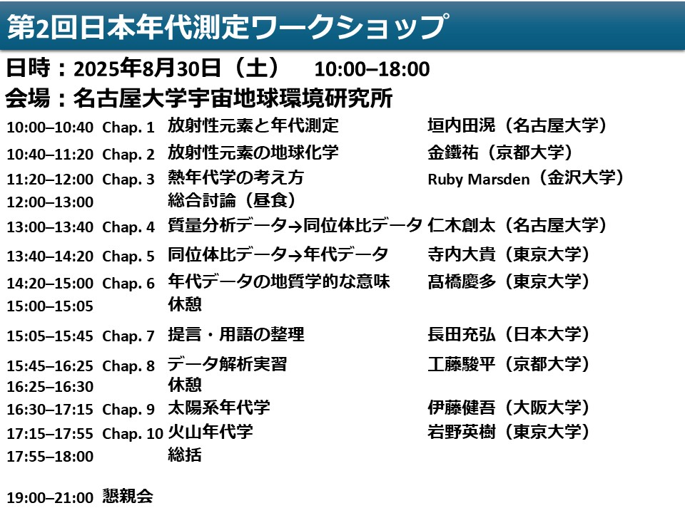
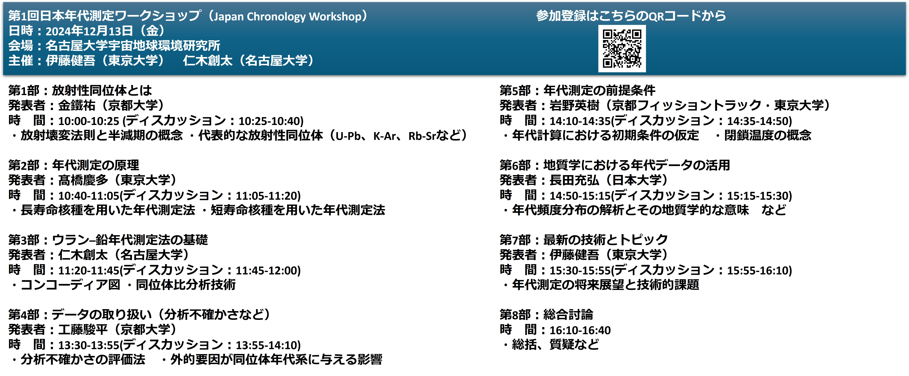

第2回日本年代測定ワークショップ（Japan Chronology Workshop; JCW2）
日時：2025年8月30日（土）
会場：名古屋大学宇宙地球環境研究所
主催：伊藤健吾（大阪大学） 仁木創太（名古屋大学）
参加登録はこちらのGoogle formから 多くの方々の参加登録誠にありがとうございました。参加登録は締め切りました。
本会は放射性同位体年代測定法に関するワークショップです。 5月のJpGUにおけるハイブリッド年代学セッションと対となる本会では、年代測定法の基礎に重きを置いた発表構成としています。 すでに専門家のみなさんからこれから年代測定法に携わる可能性のある研究者・学生まで幅広い層の方々に参加していただきたいと考えております。 また本会を年代測定法に関する研究交流の契機として活用いただければ幸いです。
昨年から引き続き年代学の基礎となる内容に加え、第二回の本会では熱年代学に関する講演や実際の年代データを使った解析実習なども予定しております。皆様のご参加を心よりお待ちしております。
本会はISEE共同利用・共同研究研究集会予算のご支援のもと運営いたしました。この場を借りて感謝申し上げます。
- 
第1回日本年代測定ワークショップ（Japan Chronology Workshop; JCW1）
日時：2024年12月13日（金）
会場：名古屋大学宇宙地球環境研究所
主催：伊藤健吾（東京大学） 仁木創太（名古屋大学）
参加登録はこちらのGoogle formから

当日は50名以上の方々にお集まりいただき、感謝の念に堪えません。本ワークショップでの闊達な議論を通じて、来年に向けた議題も整理されました。また来年もよろしくお願いいたします。
本会は日本地球化学会鳥居・井上基金のご支援のもと運営いたしました。この場を借りて感謝申し上げます。